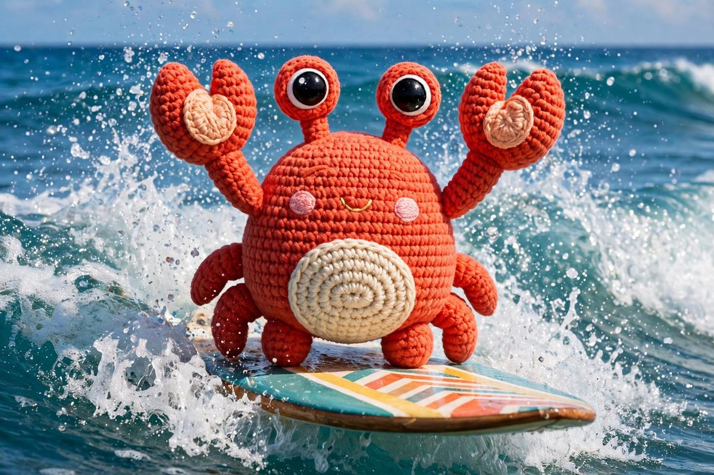
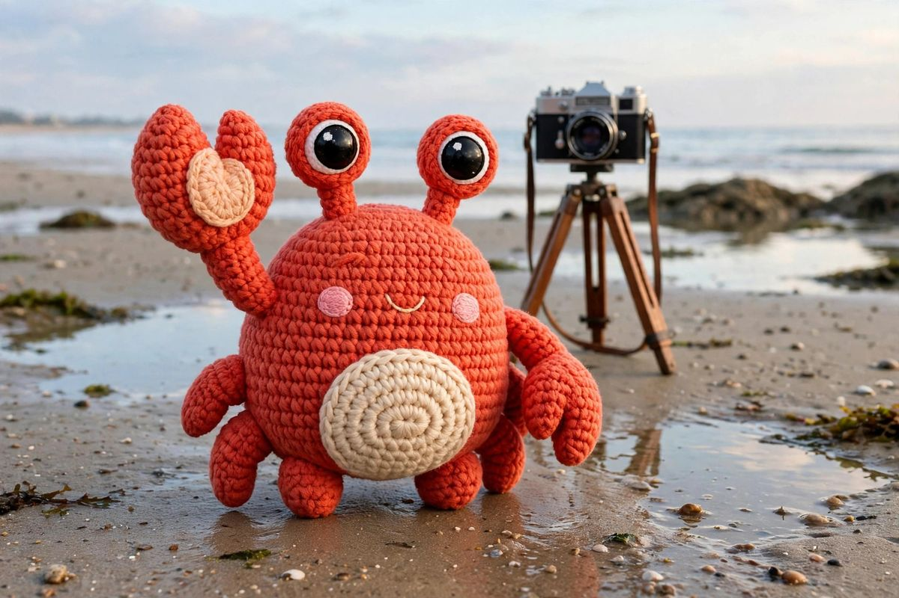
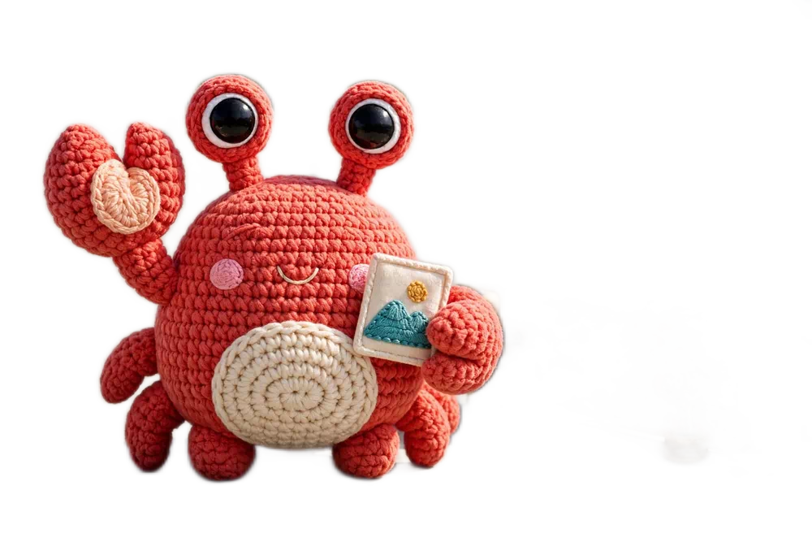
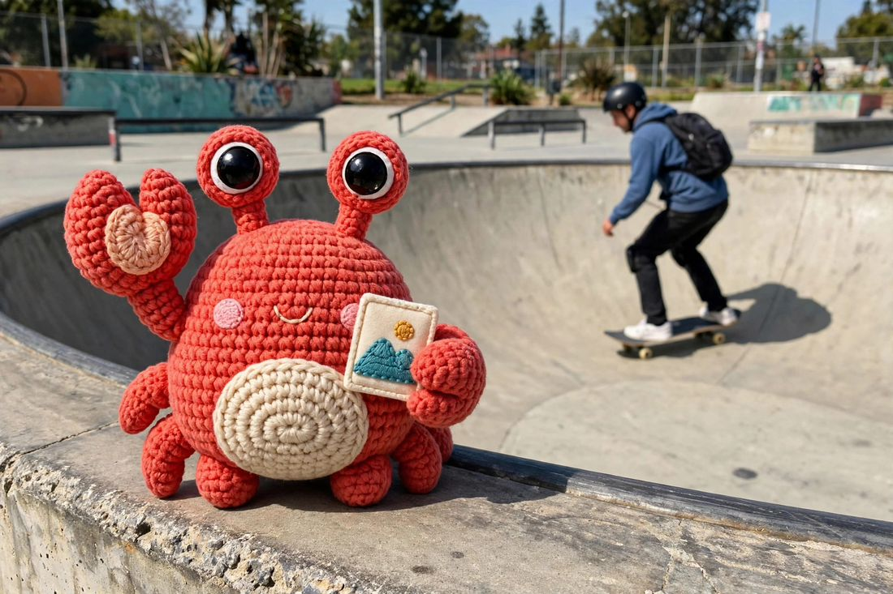
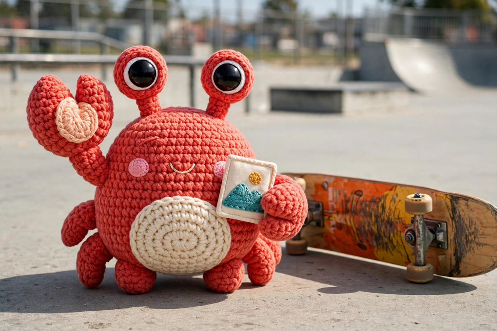
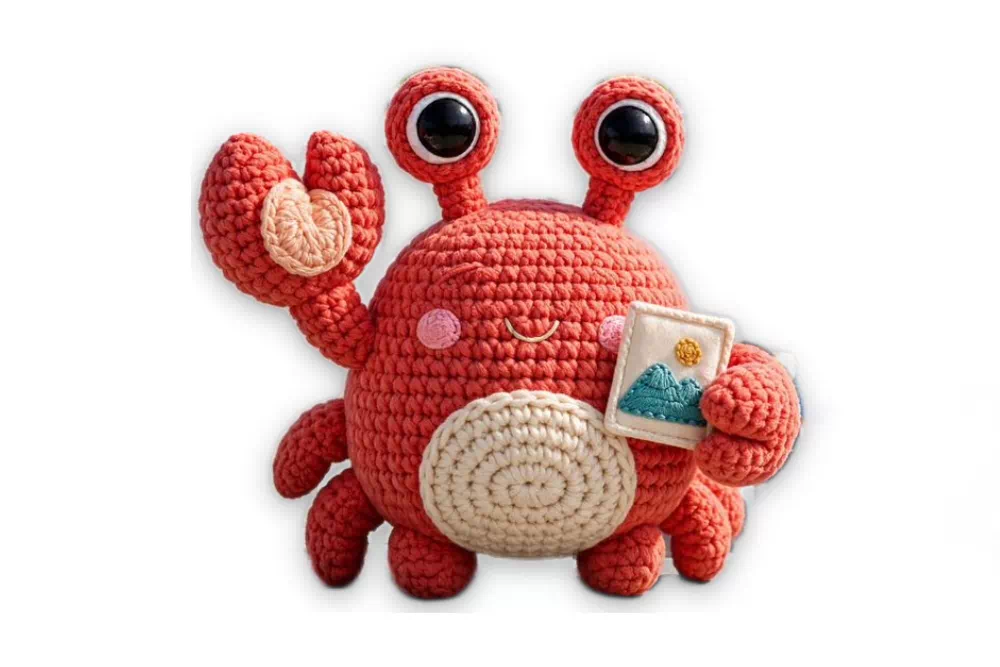
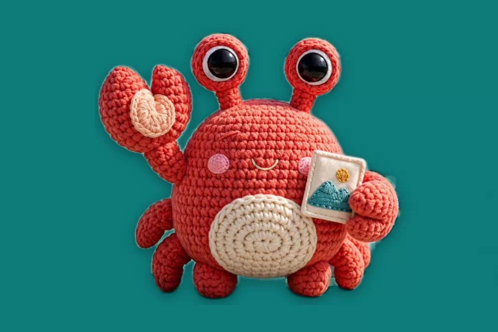
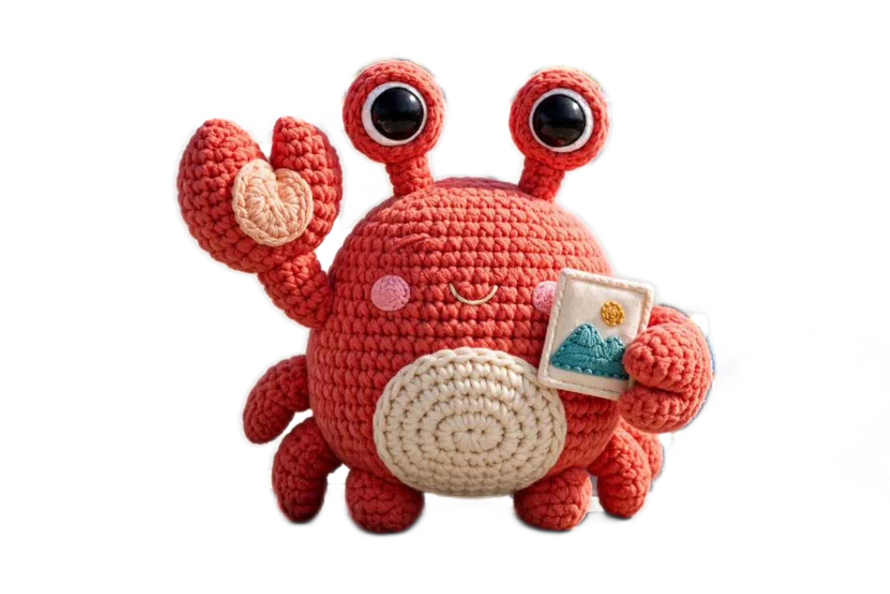

Every operation, section by section.
The complete reference: what each segment does, what it accepts, and what it looks like. Demos are honest previews, labeled where your browser stands in for the server. The product README in the repo carries the same contract.
Getting started
Crabcrop is one Rust binary. Install it, give it a secret, and request images with the operations written into the URL. There are no pre-generated thumbnails and no build step: the URL is the API.
Install
# Shell installer (macOS and Linux) curl --proto '=https' --tlsv1.2 -LsSf https://github.com/dayvson/crabcrop/releases/latest/download/crabcrop-installer.sh | sh # Docker: the base image, and the AI variant docker pull ghcr.io/dayvson/crabcrop:0.9.5 docker pull ghcr.io/dayvson/crabcrop-ai:0.9.5
The AI variant ships only the background removal (u2netp) and face detection (YuNet) models. Every other AI feature needs its own model configured, and answers 501 without one; see AI operations.
Prebuilt tarballs for macOS and Linux, on x86_64 and arm64, are on the releases page.
Building from source instead (cargo run, cargo build, or cargo install crabcrop) needs a C compiler and, on x86_64, nasm. Meson and ninja are needed only for the vendored AVIF decode route.
Quickstart
# 1. Start the server. A secret is required; unsafe is for local dev only. CRABCROP_SECRET=local-dev-secret CRABCROP_ALLOW_UNSAFE=1 crabcrop # crabcrop listening on port 3000 # 2. Request an image: resize a source photo to 300x200. curl "http://localhost:3000/unsafe/300x200/https://example.com/photo.jpg" --output photo.jpg # 3. In production, drop CRABCROP_ALLOW_UNSAFE and sign the URL instead. curl "http://localhost:3000/9e24ae8bf61c0d40cb6f1ca9f9e1d3e771f6c8bc8b8ab7270e6d15458d4c14ab/300x200/https://example.com/photo.jpg" --output photo.jpg
Every image request has three parts: GET /<signature>/<operations>/<source-url>. Operations apply in path order. Requested outputs are capped at 16383 px per axis and 100 megapixels in total; a request past either bound fails with 400 before anything is allocated.
Signing
Compute HMAC-SHA256 over the remainder of the path, the operations and the source URL exactly as they appear, with no leading slash, keyed with your CRABCROP_SECRET, and hex-encode the result as the first path segment. A request with a bad signature gets 403 and the body bad signature. The literal signature unsafe skips verification only when the server runs with CRABCROP_ALLOW_UNSAFE=1. Keep it off in production.
printf '%s' '300x200/https://example.com/photo.jpg' \ | openssl dgst -sha256 -hmac 'your-secret' # SHA2-256(stdin)= 3c1f6c180116661877bd4c85fd201a178087d74c1cc188cc584e819d901308c6
import { buildURL, buildSrcSet, purgeSignature } from "@crabcrop/url"; const url = buildURL({ base: "https://img.example.com", secret: "your-secret", operations: "crop:1200x630:smart/filters:format(webp):quality(80)", source: "https://example.com/photo.jpg", }); const srcset = buildSrcSet({ /* same options */ }, [400, 800, 1200]);
from crabcrop_url import build_url, build_srcset, purge_signature url = build_url( base="https://images.example.com", secret="your-secret", operations="300x200/filters:grayscale", source="https://example.com/photo.jpg", ) srcset = build_srcset(..., widths=[400, 800, 1200])
use crabcrop_url::{build_url, sign}; let signature = sign(secret, "300x200/https://example.com/photo.jpg"); let url = build_url(base, secret, "crop:1200x630:smart/filters:format(avif):quality(auto)", "https://example.com/photo.jpg")?;
Test vectors
Verify any implementation against these. Secret Jefe, message what do ye want for nothing?, HMAC-SHA256 ba5396e10039ec002bf1fde117eee48df8c2f06bc47b5f2d3272ea77f6862da9. Secret your-secret, remainder 300x200/https://example.com/photo.jpg, HMAC-SHA256 3c1f6c180116661877bd4c85fd201a178087d74c1cc188cc584e819d901308c6. Every SDK runs the canonical vectors from spec/test-vectors.json as its test suite, so client and server cannot drift.
Key IDs and rotation
A signature segment may carry a key ID, <key-id>:<tag>. During a rotation window the server verifies both the current secret (CRABCROP_SECRET) and the outgoing one (CRABCROP_SECRET_PREVIOUS), so URLs already in the wild keep working until the old key's URLs age out. An unknown key ID is indistinguishable from a bad signature: 403, with no hint about which IDs exist. Builders stamp the ID with keyId / key_id options, or crabcrop sign --key-id on the CLI.
Sealed URLs
Signing proves a URL was minted by someone holding the secret, but it hides nothing: the operations and the source sit in the path for anyone to read. A sealed URL encrypts that whole remainder into an opaque token that takes the signature's place: s1. followed by base64url of the nonce, the ciphertext, and the authentication tag, sealed with AES-256-GCM under a key derived from the same CRABCROP_SECRET. There is no second secret to manage, and key rotation works exactly as it does for signatures, key IDs included. Mint one with the CLI (crabcrop seal) or the seal builders in the Rust, TypeScript, and Python SDKs; Python sealing needs the crabcrop-url[seal] extra.
The payload is the whole remainder, operations and source together, so a sealed URL serves exactly what its plain spelling serves: the server opens the token and runs the same pipeline, and both spellings share one cache entry, one ETag, and one purge target. Everything after the token is a friendly name, purely cosmetic, there so the link still reads as an image in logs and page source; it is never parsed, and it may be left off entirely. Minting refuses a remainder longer than 2,048 bytes, and the server refuses a token longer than 4,096 characters.
Every sealed failure answers the same 403 with the body bad signature: a malformed token, a token minted under another secret, and a token whose payload does not parse are indistinguishable from each other. The one exception is a token that opens but has expired, which answers signature expired, exactly like the plain form. /explain refuses sealed URLs rather than decrypt them: a server endpoint that opens tokens would hand anyone who lifts one off a public page a way to read it. To debug a sealed link, unseal it locally under your own secret (crabcrop unseal, or the unseal builders in the SDKs) and explain the plain form. The meta document for a sealed request likewise reports the render, never the recipe.
Know what sealing does not do. It hides the recipe from page readers, the visitors and competitors who can see the link; anyone who can observe the request itself, like a CDN or another network intermediary, still sees it go by, and transport privacy is what TLS is for. It is not access control: a sealed URL is a bearer URL that anyone can replay, exactly like a signed one, and authorization stays with the source allowlist, expiry, and whatever fronts the deployment. For most links the readable form is the better default, and it stays the recommendation; sealing is the opt-in for links that must be public and unreadable at the same time.
URL anatomy and expiry
Click a segment. The strip is the whole grammar at a glance: one signature, zero or more operation segments, then the source, which starts at the first segment that is not an operation and may itself contain slashes.
Expiring URLs
Add an exp:<unix-seconds> segment anywhere among the operations. It is inside the signed remainder, so the HMAC covers it: extending the expiry without the secret breaks the signature. The URL is valid strictly before its exp second, with no clock skew allowance. Past it, the request gets 403 with the body signature expired, and expired URLs never serve from cache. URLs without exp: never expire.
/<signature>/exp:1893456000/300x200/https://example.com/photo.jpg
Per-request cache lifetime
Image responses normally carry Cache-Control: public, max-age=31536000, immutable, because a signed URL's bytes never change. A maxage:<seconds> segment (0 to 31536000) overrides the max-age for that response only. It changes the header, never the cache key, so URLs differing only in maxage share one stored image. maxage:0 drops immutable: caches must revalidate, and every cacheable response carries a strong ETag so revalidation can answer 304 Not Modified.
Size and crop
One sizing move per position in the path, applied in order. Try the builder: it assembles the operation exactly as the server parses it.
Operation segment:
Crop to the aspect ratio, then resize to exactly that size. smart centers on a detected face when a face model is configured, else on the point of greatest local detail.
Resize
| Form | Result |
|---|---|
| 300x200 | Exactly 300 by 200 px. |
| 300x0 or 300x | Width 300 px, height scaled proportionally. |
| 0x200 or x200 | Height 200 px, width scaled proportionally. |
| 0x0 | Original size. |
| origx100 | Source width, height 100 px. orig works on either axis. |
| -300x200 | Resize to 300 by 200 and flip horizontally. A negative height flips vertically. |
Fit inside a box
fit-in:<width>x<height>[:adaptive] scales proportionally so the image fits inside the box. A 0 axis is unbounded. Flips are not allowed here. With :adaptive, the box axes swap when the source orientation disagrees with the box's, so a portrait photo in a landscape box is not squeezed by the tighter axis.
Pad to an exact size
pad:<width>x<height>[:<fill>] fits inside the box, centers the image, and fills the rest of the canvas so the output is exactly the requested size. The fill is a 6-digit hex color, or blur for ambient bars made from a cover-scaled, heavily blurred copy of the image itself. Both dimensions are required: a 0 axis, orig, and flips are rejected.
Crop to an aspect ratio
crop:<width>x<height>[:<align>] crops to the width:height aspect ratio, then resizes to exactly that size. Align picks what survives: center (the default), top, bottom, left, right, the four corners (each keeps that corner's edges on whichever axis is cut), smart (a window on the focal point: a detected face when a face model is configured, otherwise the point of greatest local detail; the window shifts to keep detected faces whole), and face (a window around the largest detected face, padded by facepad; falls back to the smart window when no face is found).
Crop a rectangle, focal rectangle, debug view
crop-rect:<left>x<top>:<right>x<bottom> cuts the exact pixel rectangle between two corners; a rectangle outside the source fails with 400, it is not clamped. A focal: segment in the same form names the rectangle the next crop: must keep: center and smart crops position their window on it, and a smart crop with one pending skips detection entirely. Coordinates address source pixels and are not scaled by dpr. debug:focal renders a diagnostic image instead of the result, with the chosen focal point, face boxes, and crop window drawn on it; debug responses are never cached.
curl "http://localhost:3000/unsafe/crop:1200x630:top/https://example.com/photo.jpg" curl "http://localhost:3000/unsafe/crop-rect:100x50:700x450/https://example.com/photo.jpg" curl "http://localhost:3000/unsafe/focal:100x50:700x450/crop:800x600:smart/https://example.com/photo.jpg"
Adjustments
Pixel filters change the image itself. They chain inside one filters: segment, separated by :, and run in the order written. A filter with no parameters may omit the parentheses. When a directive repeats, the last one wins. Drag the sliders: the chain under the photo is the exact server syntax for the look.

CSS preview. Your browser approximates the look; the server applies the real filters to the actual pixels. Blur strength and brighten do not map one to one.
| Filter | Parameters | What it does |
|---|---|---|
| contrast | percent, -100 to 100; 0 unchanged, -100 flat gray | Adjust contrast. |
| brighten | integer -255 to 255, clamped per channel | Brighten, or darken with a negative value. |
| saturation | 0 to 255; 0 is grayscale, 1 is unchanged | Scale color saturation. |
| blur | sigma, a positive number up to 512 | Gaussian blur. |
| sharpen | strength, a positive number | Unsharp-mask sharpening. |
| huerotate | degrees, integer | Rotate the hue. |
| rgb | per-channel offsets, each -255 to 255 | Add offsets to the red, green, and blue channels: rgb(10,-5,0). |
| curve | a channel (rgb, r, g, b), then 2 to 16 x,y control points | Remap tones through the control points. The fine tone control the additive filters only approximate: curve(r,0,64,255,255). |
| convolution | 9 (3x3) or 25 (5x5) kernel values, then a normalize flag | Apply your own kernel, for the sharpen, blur, and edge styles the built-ins do not cover. |
| equalize | none | Histogram equalization, per channel. |
| noise | strength, integer 0 to 100, percent of full scale | Monochrome film grain, deterministic: the same request always returns the same bytes. |
curl "http://localhost:3000/unsafe/600x400/filters:sharpen(1.2):saturation(1.1)/https://example.com/photo.jpg"
Effects and shape
Tones, geometry, and the shape of the frame itself. Toggle the looks; radius, border, and mask need an output format that carries alpha, and the preview notes where CSS cannot follow.

CSS preview of the look filters. radius, border, mask, duotone, monochrome, pixelate, and trim run on the server's real pixels.
| Filter | Parameters | What it does |
|---|---|---|
| grayscale | none | Desaturate to gray. |
| invert | none | Invert every channel. |
| sepia | none | The classic warm sepia tone. |
| duotone | two hex colors | Map shadows to the first color and highlights to the second, by luminance: duotone(1a1a40,ffd9a0). |
| monochrome | one hex color | Single-hue rendering: each pixel's luminance scaled by the color. |
| pixelate | block size in px, 1 to 16383 | Mosaic the image into square blocks painted with their average. |
| rotate | angle in degrees, up to 36000; decimals and negatives allowed | Quarter turns are exact; other angles expand the canvas and fill the corners. |
| flip | flip(h) or flip(v) | Mirror the image at this point in the chain. |
| trim | optional tolerance 0 to 255, default 10 | Crop away the border that matches the top-left corner color. |
| radius | one value, or four in CSS corner order, each up to 16383 | Round the corners, antialiased. Output format must carry alpha. |
| border | width 0 to 16383 and a hex color | Paint an opaque band inside the frame. Width 0 is a no-op. Works on any format. |
| mask | mask(circle) or mask(ellipse) | Keep only the inscribed shape; the rest becomes transparent. |
| blur_region | x, y, w, h in pixels | Gaussian-blur one rectangle. A region that overflows the image is an error, not a partial redaction. |
| pixelate_region | x, y, w, h in pixels | Pixelate one rectangle, with the same bounds rule. |
Overlays and text
Three filters composite onto the image. Overlay images are fetched through the same loader, limits, and source policy as source images, and a failed overlay fails the request with 502 instead of being skipped. These run on the server's pixels at the filter's position in the chain, so there is no honest browser stand-in: the examples below are the exact requests.
Watermark
filters:watermark(<url>,<x>,<y>,<alpha>). The URL is percent-encoded (it lives inside a path segment). Negative x and y anchor from the right and bottom edges. Alpha runs 0 (invisible) to 100 (opaque), and the watermark's own alpha is honored.
# Overlay a logo at the bottom right, 80% opaque curl "http://localhost:3000/unsafe/filters:watermark(https%3A%2F%2Fcdn.example.com%2Flogo.png,-10,-10,80)/https://example.com/photo.jpg"
Overlay with blend modes
filters:overlay(<url>,<x>,<y>,<alpha>,<blend>[,<width>]) generalizes the watermark: blend is normal, multiply, screen, or overlay (the CSS formulas per channel), and the optional width scales the overlay to that percentage of the base image's width before compositing. The base image's alpha channel is preserved.
curl "http://localhost:3000/unsafe/filters:overlay(https%3A%2F%2Fcdn.example.com%2Ftexture.png,0,0,60,multiply,100)/https://example.com/photo.jpg"
Text
filters:text(<text>,<size>,<color>,<anchor>) draws a label with a font configured on the server (CRABCROP_FONT_PATH; with no font configured, text requests fail with 501). Size is 1 to 1000 px; color is rrggbb or rrggbbaa; anchor is one of nine grid points, from top-left to bottom-right. Put text after your resize so it draws sharp at the final resolution.
curl "http://localhost:3000/unsafe/800x600/filters:text(Sale%20ends%20soon,32,ffffff,bottom-right)/https://example.com/photo.jpg"
Format and quality
Encoding directives leave the pixels alone and steer the encoder. Build one:
An explicit format() always wins over Accept negotiation.
| Directive | Parameters | What it does |
|---|---|---|
| format | jpeg (or jpg), png, webp, jxl, avif, gif, mp4, webm | Output format. Overrides Accept negotiation. Video formats are explicit-only, see below. |
| quality | 1 to 100, or quality(auto) | Encoding quality for JPEG, JPEG XL, AVIF, and WebP. Default 80. quality(100) selects the lossless WebP encode. No effect on PNG or GIF. |
| max_bytes | byte budget, at least 1 | Re-encode at decreasing quality until the output fits. If quality reaches its floor of 1 and the output is still over budget, you get the smallest encode rather than an error. |
| fill | six hex digits | Background used to flatten transparency into JPEG, and the pad fill fallback. |
| no_upscale | none | Cap every resize in the request at the source dimensions, request wide. |
| dpr | 1, 1.5, 2, or 3 | Scale size and crop targets by the device pixel ratio. An explicit dpr beats the DPR client hint header. |
quality(auto), verified
quality(auto) picks a quality per image, from 50 for flat images to 95 for detailed ones. For JPEG and JPEG XL the pick is then verified: crabcrop encodes, decodes, and scores the result against the processed source with SSIMULACRA2, adjusting until it lands on target (75 by default), and reports the achieved score in meta. When crabcrop chooses the quality, the response carries an X-Crabcrop-Quality header with the value used.
Negotiation
When the URL names no format(...), the request's Accept header decides. Among AVIF, JPEG XL, and WebP, the highest q-value wins; ties break by server preference in that order; a format refused with q=0 is never picked; wildcards do not count as an offer. If none of the three is offered, the source format is kept. Animated sources never negotiate to JPEG XL, which would drop their frames.
Client hints and Save-Data
When a URL sizes nothing itself, the server honors width client hints (Sec-CH-Width, Width, viewport variants), quantized up to a multiple of 100 px so nearby viewports share one cache entry. A request with Save-Data: on gets the default quality stepped down one notch, from 80 to 70, on the formats that carry a quality; URLs that set quality(...) themselves are unaffected.
Video output
An animated GIF or WebP can leave as real video: filters:format(mp4) or format(webm), the gifv pattern. Crabcrop ships no codec: the encode runs in an external program you configure with CRABCROP_VIDEO_ENCODER (FFmpeg is the reference), validated at startup. Unset means video URLs answer 501, and a failed encode is an error, never a silent fallback to the GIF. At most two encodes run at a time, each under a hard timeout and an output cap.
Formats, in and out
| Format | Decode | Encode |
|---|---|---|
| JPEG | Yes | Yes |
| PNG | Yes | Yes |
| WebP | Yes, still and animated | Yes; animated out is lossless |
| GIF | Yes, animated | Yes, animated |
| AVIF | Yes, in the Docker image and the release binaries; source builds opt in with the avif-decode feature | Yes |
| JPEG XL | Yes | Yes |
| HEIC / HEIF | Yes, decoded in pure Rust, primary image only | No |
| SVG | Yes, sanitized then rasterized | No; output defaults to PNG for SVG sources |
EXIF orientation is applied at decode, so phone photos come out upright. ICC profiles are converted to sRGB before any operation runs; filters:keep_profile opts out per request and embeds the source profile in JPEG and PNG outputs instead. Animated GIF and WebP sources keep their frames, delays, and loop count when the output carries animation.
Video frames
A video source can also be an image source: a frame: segment selects one frame, and that frame becomes the source image the rest of the URL operates on. It flows through crops (face-safe smart crops included), filters, studio mode, and format negotiation like any other source image. The selection applies at decode, wherever the segment sits in the path; when a URL carries several frame: segments, the last one wins.
frame:poster frame:<seconds> frame:<percent>%
curl "http://localhost:3000/unsafe/frame:50%/800x450/filters:format(webp)/https://example.com/clip.mp4"
frame:poster is the video's first frame, frame:1.5 is the frame at a timestamp in seconds, and frame:50% is the frame at a percentage of the duration. The edges:
- Frame selection is video-only. A
frame:segment on a still image or an animated GIF or WebP source fails with502, the way a bad source fails; animated sources keep their existing behavior whenever noframe:segment is present. - Out-of-range selections clamp: a timestamp past the end of the video serves the last frame, and so does
frame:100%. Nothing about the request is an error. A percentage needs the video's duration; a container that reports none fails the percentage form with400. - A malformed selector (a sign, an exponent, a percentage over 100, a timestamp over 86400) fails with
400and theinvalid_framecode, before any fetch.
Extraction is an operator feature: crabcrop ships no video decoder. It runs through the external decoder configured with CRABCROP_VIDEO_DECODER (FFmpeg is the reference), validated at startup; with the variable unset, a frame: URL answers 501. Extraction happens once per unique URL on a cache miss, and the result caches and purges like any other render. A frame render's meta response carries a video object: the stream's width and height, its duration in seconds when the container reports one, and the frame_timestamp the frame was selected at, after clamping. See Meta endpoint.
PDF pages
A PDF source can also be an image source: a page: segment selects one page, rendered as the source image the rest of the URL operates on. page:1 is the document's first page. The page renders at a fixed scale of 2 (a 144 dpi raster), and from there the request is an ordinary image request: crops, filters, studio mode, and format negotiation apply unchanged. One page per request: there are no ranges and no contact sheets. When a URL carries several page: segments, the last one wins.
page:<n>
curl "http://localhost:3000/unsafe/page:2/800x1000/filters:format(webp)/https://example.com/report.pdf"
The edges:
- Page selection is PDF-only. A
page:segment on an image, a video, or any other source fails with502, the way a bad source fails. - Pages are 1-based and the number is exact:
page:9on a three-page document fails with400. It never clamps to the last page, the deliberate difference fromframe:timestamps: a frame is a position inside a stream, while a page is a numbered object a caller picks by identity, so a wrong number is a wrong request, not a position past the end. - The number is canonicalized:
page:007ispage:7, and both spellings share one cache entry. A malformed selector (zero, a sign, letters, more than six digits) fails with400and theinvalid_pagecode, before any fetch. - A document that needs a password to open fails with
400. A document that is merely permission-encrypted and opens without a password renders normally. Documents over 1000 pages are refused.
Rendering is an operator feature: crabcrop ships no PDF renderer. It runs through the external renderer configured with CRABCROP_PDF_RENDERER (Poppler's pdftocairo is the reference), validated at startup; crabcrop derives the pdfinfo program next to it, in the same directory, and uses it to probe documents. Each run is bounded by CRABCROP_PDF_TIMEOUT_SECS (default 30). With the variable unset, a page: URL answers 501. The tools receive only the document bytes over stdin, so external references, embedded files, and document actions or scripts have no target and no effect. A page render's meta response carries a pdf object: the document's pages count, the page rendered, and the page's page_width and page_height in points. See Meta endpoint.
AI operations
AI filters run ONNX models you supply as files, loaded at boot before the server reports ready. Crabcrop never downloads a model. A configured model that cannot load is a startup error, not a surprise for the first request. With no model configured, the filter answers a clean 501, and nothing silently degrades: upscale never falls back to a plain resize, and a detection failure fails a redaction request rather than serving an unredacted image. Inference runs behind a server-wide gate of 2 concurrent inferences.
Every after image in this section is the direct output of a running crabcrop server fed these exact photos, with the operations printed under each demo. Nothing was retouched in an editor.


Background removal
removebg keeps the subject and swaps the background for real alpha. Ask for a format that carries alpha: png, webp, jxl, or avif; into JPEG it fails with 400. Configured with CRABCROP_REMOVEBG_MODEL (a U²-Net family model).
fit-in:1000x667/filters:removebg:format(webp)


Redact people: blur
blurclass(person) blurs every detected object of the class and nothing else. pixelateclass does the same with mosaic. Repeat the filter to cover more classes; matching is case-insensitive. An unknown class is a 400. Configured with CRABCROP_DETECT_MODEL (a YOLOv8 family model).
fit-in:1100x733/filters:blurclass(person)



Smart crop and face operations
With CRABCROP_FACE_MODEL (a YuNet model) configured, :smart centers on detected faces and shifts to keep them whole, :face crops around the largest face outright, and blurfaces / pixelatefaces redact every detected face. facepad(0.5) sets the padding around a face crop, 0 to 3, default 0.5. Face detection only ever improves a smart crop: no model, no faces, or a detection failure all fall back to the detail-based focal point.
crop:760x760:smart
| Filter | Configuration | What it does |
|---|---|---|
| removebg | CRABCROP_REMOVEBG_MODEL | Remove the background, subject over transparency. |
| studio | the removebg model | Product-shot composites. See the Studio mode section. |
| upscale(2) or upscale(4) | CRABCROP_UPSCALE_MODEL | Super-resolution by that factor, output capped at 4096 px per dimension, at most 262,144 input pixels per model run (a larger input is a 400). upscale(4) on a 2x model composes two runs. Source transparency is carried across. |
| blurfaces, pixelatefaces | CRABCROP_FACE_MODEL | Redact every detected face. |
| blurclass, pixelateclass | CRABCROP_DETECT_MODEL | Redact every detected object of a class. |
| recolorclass(class,hex) | CRABCROP_DETECT_MODEL | Paint every detected object of a class a solid color, alpha preserved. |
| remove_region(x,y,w,h) | CRABCROP_INPAINT_MODEL | Erase a rectangle and inpaint it from the surrounding pixels. |
| facepad | the face model | Padding for crop:...:face, 0 to 3, default 0.5. |
Region removal: remove_region
Point CRABCROP_INPAINT_MODEL at a LaMa family inpainting model and the remove_region(x,y,w,h) filter erases a rectangle and inpaints it from the surrounding pixels, with the same bounds rule as blur_region: a rectangle that overflows the image is a 400. Each removal runs the model once on a square crop window around the rectangle, and only the rectangle's pixels are taken from the result: everything outside it comes back bit-identical. Meta responses for a removal carry an inpaint object listing the erased rectangles. Know the limit before you rely on it: the model fabricates what goes in the hole. The fill is plausible on smooth or textured surroundings and visibly wrong on structured content: text, faces, repeating patterns, straight edges that should continue. A removal takes seconds of inference behind the shared AI gate, and the result cache absorbs repeat requests for the same URL, so a given removal is normally paid for once.
Segmentation: class operations follow the silhouette
Point CRABCROP_SEGMENT_ENCODER_MODEL and CRABCROP_SEGMENT_DECODER_MODEL at a MobileSAM export pair (an image encoder and a box-prompt decoder; both are required together) and the class filters change shape: blurclass and pixelateclass redact each object's silhouette instead of its rectangle, and recolorclass paints the silhouette. Segmentation is box-prompted: each detection goes to the decoder as its own box, and the mask decides, pixel by pixel, what the operation touches; the mask's soft edge blends, so silhouettes antialias instead of stair-stepping. The image is encoded once per request however many class operations chain, and each box costs one small decode. Meta responses for a request that segmented carry a segments object: per object, the label, the detection score and box, the mask's tight box (the silhouette's own extent, often well inside the detection), its coverage (the share of the box the silhouette fills), and its centroid. Without the pair, the class filters keep their rectangle behavior exactly. With the pair, a segmentation failure fails the request like a detection failure does, never a silently rectangular redaction. Class operations still need a detection model: the segmenter refines boxes, it does not find them.
OCR: text in meta
Point CRABCROP_OCR_DETECT_MODEL and CRABCROP_OCR_RECOGNIZE_MODEL at a PP-OCR family model pair (a text detector and a text recognizer) and CRABCROP_OCR_DICT at the recognition model's character dictionary, and meta requests that opt in with ocr=1 gain an ocr object: the lines read in the processed image, in reading order, each with its text, a confidence score, and its box, plus the lines joined as one text_content. All three OCR paths are required together, and the dictionary's character count is checked against the recognition model at boot, so a mismatched set fails startup instead of returning misaligned text. CRABCROP_OCR_LANGUAGE declares the language the recognition model serves (a BCP-47 tag, default und), and meta echoes it beside the model identity. The text is an annotation only: an OCR request builds and caches exactly the image entry any other request for the URL would, byte for byte. When the opt-in cannot be answered, the field reports itself unavailable with a reason, and the meta request still succeeds. See Meta endpoint.
Declared detectors
CRABCROP_DETECTORS_FILE points at a JSON file declaring more of your own models against two built-in contracts: boxes (a YOLOv8 family detector feeding class redaction and meta detections) and focal (a heatmap model feeding smart crops). The file is configuration only; crabcrop never loads or runs operator code. Every declaration is loaded and probed at boot.
[
{ "name": "crates", "model": "/models/crates.onnx", "kind": "boxes",
"labels": "/models/crates.txt", "threshold": 0.4 },
{ "name": "saliency", "model": "/models/saliency.onnx", "kind": "focal" }
]The meta family (tags, alt text, moderation, embeddings, aesthetic scores, detections) is covered in the Meta endpoint section.
Studio mode
studio(product,...) names an outcome instead of a mechanism: a listing-ready product shot. One filter expands into a fixed pipeline, run at the filter's position in the chain: mask the subject with the removebg model, decontaminate edge colors against the old background, fill the canvas with the resolved backdrop, synthesize a contact shadow from the subject's own alpha, then scale and center the subject so the pad margin holds on every side.


White backdrop, soft shadow
fit-in:1000x667/filters:studio(product,bg:white,shadow:soft,pad:10)

The brand backdrop
bg:brand paints the operator's brand color, set once with CRABCROP_BRAND_COLOR. The URL never names a hex.
filters:studio(product,bg:brand,shadow:soft,pad:10)

No backdrop: keep the alpha
bg:none skips the backdrop and the shadow, and the composite keeps real transparency.
filters:studio(product,bg:none)
| Argument | Values | Default |
|---|---|---|
| bg | white, a six-digit hex, brand, or none | The brand color when configured, else white |
| shadow | soft, strong, or none | soft |
| pad | 0 to 40, percent margin per side | 10 |
If the mask finds no subject, the fallback serves the original image centered and padded on the resolved backdrop, with no shadow, and the meta record says so. Behind a backdrop nothing transparent survives, so the composite is valid in every output format, JPEG included, and later operations apply on top: filters:studio(product)/1200x1200 sizes the finished shot. Meta responses report the run in a studio field: the resolved backdrop and where it came from, the shadow and pad applied, the steps that ran, and any fallbacks taken.
# The defaults: brand backdrop (white when none is configured), soft shadow, pad 10 curl "http://localhost:3000/unsafe/filters:studio(product)/https://example.com/shoe.jpg" # Every argument named curl "http://localhost:3000/unsafe/filters:studio(product,bg:f5f0e8,shadow:strong,pad:25)/https://example.com/shoe.jpg"
Scene mode: studio(scene)
studio(scene) is the second mode: it keeps the photograph's scene instead of cutting the subject out. One filter expands into a smart crop on the detected subject plus a per-image light and color correction, run at the filter's position in the chain. The same mask model runs first; without one configured, studio(scene) fails with 501, the same way. The subject is picked from the mask's connected regions at the subject threshold: the largest wins, ties break toward the frame center, then reading order. The frame is cropped to the smallest window with the frame's own aspect ratio that holds the subject with its pad margin, then resized back to the canvas in effect, so the output keeps the size the chain expects and later operations compose unchanged. The correction is driven by the reframed image's own histogram: a per-channel levels stretch between the 0.5th and 99.5th percentiles (a channel whose span is too flat to stretch is left alone), then a saturation factor that steers the image's mean saturation toward 0.30, capped at 1.35 and never below 1, so muted photographs gain color and vivid ones are never desaturated.
Scene takes one argument: pad, 0 to 40, default 10, the margin the subject keeps in the reframed window. The product arguments are bad arguments under scene: bg or shadow named with studio(scene) is a 400. If the mask finds no subject (or only a speck not worth believing), the fallback skips the crop and serves the original framing, corrected. Meta reports scene runs in the same studio field, with mode set to scene and a scene object: the winning subject's box (or null), how many candidate subjects the mask carried, the crop window applied, the per-channel levels stretch, and the saturation factor, alongside the steps and fallbacks.
# Reframe on the subject and correct, default pad curl "http://localhost:3000/unsafe/filters:studio(scene)/https://example.com/shoe.jpg" # A wider margin around the subject curl "http://localhost:3000/unsafe/filters:studio(scene,pad:25)/https://example.com/shoe.jpg"
Presets
A preset names an operation string on the server, so URLs stay short and the transformation menu stays operator-controlled. Define presets in a file, one per line, and point CRABCROP_PRESETS_FILE at it:
# /etc/crabcrop/presets.txt og-card = crop:1200x630:smart/filters:format(webp):quality(80) thumb = 300x200
curl "http://localhost:3000/<signature>/preset:og-card/https://example.com/photo.jpg"
The signature covers the preset reference; the server expands it deterministically after verification, and cache entries key on the expanded operations. Treat a preset as a stable template: never edit a definition in place. Roll a change out under a new name (thumb2). Editing in place changes the bytes behind URLs already signed and shared, and image responses travel with an immutable cache header for a year, so downstream browsers and CDNs keep serving the old response beyond the reach of any purge. An unknown preset name is a 400. Definitions are validated at startup, and presets cannot contain a source segment, an exp:, a maxage:, or another preset.
With CRABCROP_ONLY_PRESETS=1, free-form operations are rejected with 400: requests may use preset references, exp: and maxage: metadata, and bare sources only. Combined with unsafe mode it makes a public deployment where browsers and CMSs build URLs from preset names alone, with no secret to hold. Responses for preset URLs carry a Cache-Group header naming the preset, which is what purge-group clears.
Source roots
A source root names an origin on the server, so a URL can carry a short source instead of spelling out the full source URL: the origin layout stays off the URL, and URLs get shorter. Define roots in a file, one per line, and point CRABCROP_SOURCE_ROOTS_FILE at it:
# /etc/crabcrop/roots.txt photos = https://cdn.example.com/photos media = https://assets.example.com
curl "http://localhost:3000/<signature>/300x200/root:photos/cat.jpg"
That request fetches https://cdn.example.com/photos/cat.jpg. The signature covers the short form exactly as written; the server expands it after verification and before cache keying, so the short spelling and the full URL it expands to are one render: they share a cache entry, and purging either spelling evicts it. Root definitions are validated at startup: names are letters, digits, _, or -, a duplicate name refuses the boot, and a base must be an absolute http(s) URL with no userinfo, query, or fragment.
The safety rules:
- The source allowlist (
CRABCROP_ALLOWED_SOURCES) and every other loader check apply to the expanded URL, exactly as if the client had spelled it out. A root never widens what the server will fetch. - The path must stay under the root. Dot segments are normalized, and a path that climbs above the root, plainly or percent-encoded, is a
400(invalid_root). - An unknown root name is a
400(unknown_root), including on a server with no roots configured. - Root base URLs are operator configuration and stay private:
explainreports the source as written plus the root's name, and never prints a base URL.
Sources and safety
The source locates the original. Four kinds are supported:
| Kind | Form | Notes |
|---|---|---|
| HTTP / HTTPS | https://example.com/photo.jpg | Fetched under the source policy: CRABCROP_ALLOWED_SOURCES host suffixes, up to 5 redirects with the policy re-checked on every hop. Source URLs with userinfo are always refused. |
| S3 | s3://bucket/key | AWS S3 or an S3-compatible store via CRABCROP_S3_ENDPOINT. SigV4 signed when AWS credentials are in the environment; unsigned otherwise. |
| GCS | gs://bucket/key | Google Cloud Storage's S3-compatible XML API, signed with the CRABCROP_GCS_* HMAC pair when set. |
| Local file | file:///path | Must stay under CRABCROP_FILE_ROOT, canonicalized per request, so .. segments and symlink escapes are refused. Unset root disables file sources. |
Bucket sources are gated by CRABCROP_ALLOWED_BUCKETS rather than the host policy. When signing credentials are configured, the allowlist is required: the server refuses to boot without it, because signed fetches would otherwise reach every bucket the credentials can read. List * to deliberately allow all buckets. A bucket or object key carrying a dot segment, a path component that is exactly . or .., is refused, since the request path would collapse it past the allowlisted bucket; dots inside a segment name are fine. Bucket names must follow the S3 naming rules (3 to 63 characters of lowercase letters, digits, dots, and hyphens, starting and ending with a letter or digit, no adjacent dots, no dot beside a hyphen, not an IP address spelling): the name is interpolated into the request host, so a name carrying a host-breaking character is refused at parse time, whatever the allowlist says. Store responses are not redirected: a 3xx from a store surfaces as its status code.
Fetch and decode limits
- 10 seconds per HTTP request; each redirect hop (up to 5) gets its own 10 second budget.
- 10 MiB maximum body; larger sources fail with
502. - A
Content-Typeheader, when present, must start withimage/: the exceptions are avideo/*source under aframe:segment (see Video frames) and anapplication/pdfsource under apage:segment (see PDF pages). - Decoding is bounded: at most 16384 px per axis, 256 MiB of decoder allocations, and animated sources at most 200 frames and 100 million decoded pixels.
What decodes
JPEG, PNG, WebP, GIF, and JPEG XL sources are decoded. EXIF orientation is applied before any operation runs, so phone photos come out upright. Animated GIFs keep their frames when the output format is GIF; converting an animated GIF to a still format uses the first frame. Animated WebPs keep their frames when the output format is WebP or GIF, with frame delays and the loop count preserved; converting one to a still format uses the first frame. Animated WebP output is always encoded losslessly, and those renders run behind a dedicated gate of one encode at a time: while one is running, another animated WebP request waits up to 10 seconds for the slot and then sheds with a 503 rather than queueing behind a long encode.
AVIF sources are decoded in builds that include AVIF decoding: the Docker image and the release binaries. A source build includes it with --features avif-decode, which links dav1d (a system libdav1d 1.3 or newer, or a vendored build); without it, AVIF sources fail with 502 and an error naming the feature. Animated AVIF sources decode their first frame. HEIC and HEIF sources are decoded in every build by the pure-Rust oxideav stack: the primary image only, with grid and overlay compositions resolved, EXIF orientation honored, and 10-bit sources flattened to the pipeline's 8-bit working space, as AVIF sources are.
SVG sources
SVG sources are supported and detected by content, not by the declared content type. An SVG is sanitized before it is rendered: script elements, event handlers, and references to external resources are stripped, so a source SVG can only draw what it carries with it. The sanitized document is rasterized at the size the URL asks for (or its intrinsic size when the URL asks for none) and then runs through the normal pipeline. Output defaults to PNG for SVG sources.
Private address protection
With CRABCROP_BLOCK_PRIVATE_SOURCES on, the loader refuses sources whose host is, or resolves to, a non-public address: loopback, private, link-local, unspecified, shared (CGNAT), reserved, multicast, broadcast, documentation, benchmarking, and the other special-purpose ranges, including IPv4-mapped, IPv4-compatible, and 6to4 spellings of them, checked before connecting and again on every redirect hop. The loader resolves the host, checks its addresses, and pins the connection to the validated address, so the address that was checked is the address that gets connected (no DNS-rebinding gap). A policy refusal answers 403.
Fallback image
With CRABCROP_FALLBACK_IMAGE set, a source that cannot be fetched or decoded degrades to the fallback instead of an error: the fallback runs through the same operations and is served with 200 and the header X-Crabcrop-Fallback: 1. Signature and parse failures never fall back, a 400 or 403 stays honest, and neither does a source-policy refusal. Fallback responses are never cached and are served with Cache-Control: no-store, so a recovered origin is picked up on the next request and no intermediary pins the placeholder in place of the real image.
Meta endpoint
Send Accept: application/json with any image URL and get metadata about the processed image instead of the image bytes. Meta responses are served with Cache-Control: private, no-store and are never cached: a URL has two representations, and intermediaries must never pin one in place of the other.
curl -H "Accept: application/json" "http://localhost:3000/unsafe/300x200/https://example.com/photo.jpg"
{
"width": 300, "height": 200, "format": "jpeg", "bytes": 18234,
"source_width": 1200, "source_height": 800
}
| Field | Meaning |
|---|---|
| width, height | Output dimensions in pixels. |
| format | Output format: jpeg, png, webp, jxl, avif, or gif. |
| bytes | Size of the processed image in bytes. |
| source_width, source_height | Source dimensions, after EXIF orientation. |
| ssimulacra2 | The verified perceptual score, present when quality(auto) verified a JPEG or JPEG XL encode. 100 is identical. |
| studio | Present when a studio(...) filter ran, with a mode (product or scene). Product runs report the resolved backdrop, its source, the shadow and pad. Scene runs report the pad and a scene object: the winning subject box, the candidate subjects count, the crop window, the per-channel levels, and the saturation factor. Both report the steps and the fallbacks. |
| video | Present when the source was a video and a frame: segment selected the frame: the video stream's width and height, its duration in seconds when the container reports one, and the frame_timestamp the frame was selected at, after clamping. |
| Present when the source was a PDF and a page: segment selected the page: the document's pages count, the page rendered, and the page size as page_width and page_height in points. | |
| provenance | The C2PA facts for this render: whether output signing is configured on this server (signing_configured), and a summary of the manifest the source carried and the manifest the output carries (source and output, each null when the asset carries none, else {state, signer, manifests, ingredients} with state one of valid, trusted, invalid). See Provenance (C2PA). |
Opt-in parameters
Parameters ride on the same Accept entry. Each opts in when bare, 1, or true. When an opt-in cannot be answered (nothing configured, a busy inference gate, a failed run), the field reports itself unavailable with a reason, and the meta request still succeeds.
| Parameter | Adds |
|---|---|
| placeholders=1 | dominant_color (the average color as #rrggbb), palette (the five most prominent colors), placeholder (a 16 px wide blurred JPEG preview as a data URI), and thumbhash (a ThumbHash string your client decodes into an aspect-correct blur while the real image loads). |
| detections=1 | detections: the objects found, as {label, score, x, y, w, h, detector} in pixels, from the built-in detector and every declared detector. |
| moderation=1 | moderation: the configured classifier's per-category verdict scores, or, with only a labels file configured, zero-shot CLIP signals marked review_only. Verdicts annotate meta only: no score ever changes what the image URL serves. |
| embeddings=1 | embedding: the CLIP image vector, float16 little-endian, base64-encoded, with embedding_model, embedding_dim, embedding_encoding, and embedding_normalized alongside, ready to store in a vector index. |
| ocr=1 | ocr: the text read from the processed image, as {model, language, text: [{text, score, x, y, w, h}], text_content}: the lines in reading order with their boxes in the image's pixels and a confidence score each, plus the lines joined into one text_content. The text annotates meta only: the image bytes are identical with or without it. |
With a CLIP model configured, meta responses also carry tags (zero-shot labels with scores) and alt_text composed from the best labels, whether or not placeholders were asked for. With CRABCROP_AESTHETIC_HEAD set, they carry aesthetic: a LAION-style head's score of the same embedding, with the head's and encoder's identities. The aesthetic score is descriptive only: it never gates, ranks, or alters what a URL serves. One refusal: a meta request on a video URL answers 400, because a video result is not an image.
curl -H "Accept: application/json; placeholders=1; detections=1" \ "http://localhost:3000/unsafe/300x200/https://example.com/photo.jpg"
Provenance (C2PA)
Crabcrop reads and writes C2PA Content Credentials. The two halves are independently useful: verification reports what a source already carries, and signing attaches credentials to the outputs this server produces.
Verify: always on
Every meta response carries a provenance object; no configuration is needed and no opt-in parameter is required. It reports whether output signing is configured on this server, plus a summary of the manifest store the source carried and the one the output carries: for each, the validation state (valid, trusted, or invalid), the signer as a validator would show it, and the counts of manifests and ingredients in the store. Verification runs on the c2pa-rs 0.91 line, the first that enforces the specification's exclusion rules.
{
"provenance": {
"signing_configured": true,
"source": { "state": "trusted", "signer": "Example Newsroom", "manifests": 1, "ingredients": 2 },
"output": { "state": "valid", "signer": "Example Newsroom", "manifests": 2, "ingredients": 1 }
}
}
Each of source and output is null when that asset carries no manifest store.
Sign: your certificate, proven at boot
Set CRABCROP_C2PA_CERT to a PEM certificate chain and CRABCROP_C2PA_KEY to its private key in PKCS#8 PEM form, and still JPEG, PNG, WebP, and AVIF outputs are signed as they are produced. The identity is yours, like the models and the secret: the server holds no certificate of its own. It is proven at boot with a sign-and-verify round trip, so a broken identity (a bare self-signed certificate, a key that does not match, a chain outside the C2PA certificate profile) is a startup error with the reason named, never a first-request surprise. Setting only one of the pair is a startup error too. CRABCROP_C2PA_TSA_URL optionally adds a timestamp authority.
CRABCROP_C2PA_CERT=/etc/crabcrop/c2pa-chain.pem \ CRABCROP_C2PA_KEY=/etc/crabcrop/c2pa-key.pem \ crabcrop
A manifest cannot survive a transform byte for byte: decoding and re-encoding drop the segments it lives in. So the source itself is recorded in the output's manifest as a parent ingredient, its hash always and its own manifest store whenever it carries one, and the chain stays walkable end to end. Video and PDF sources are the exception: a frame or page render starts a fresh chain, so no source ingredient hash is recorded for them. Outputs of the AI edits (background removal, studio mode, region removal, upscale, and the class and face edits) record the edit with the IPTC compositeWithTrainedAlgorithmicMedia digital source type. GIF, JPEG XL, video, and animated WebP outputs are served unsigned in this version.
What a credential says
A valid credential proves origin, not untouched pixels. It attests that this server produced the output from the ingredient it names, under the identity that signed it; the manifest itself records that the image was transformed. Whether verifiers call the result trusted depends on your certificate, not on this software: a chain issued by a CA on the C2PA trust list reads as trusted, while a private CA chain signs and validates and shows as valid but not trusted, with the signer named. Both are useful; pick with your eyes open.
Explain
Every crabcrop URL can explain itself. Take any image URL, put explain/ in front of the signature segment, and the server answers with a report on that URL instead of the image. Browsers get a readable HTML page; send Accept: application/json for the same report as JSON.
curl "http://localhost:3000/explain/<signature>/crop:1200x630:smart/filters:format(avif):quality(auto)/https://example.com/photo.jpg"
The report carries the signature verdict (valid, which key, when the link expires), the source and its probed facts (media kind, pixel dimensions, encoded size), every operation glossed in plain language in order, the referenced presets with their expansions, a forecast (output dimensions when the chain determines them, the output format, the output pixel count against the budget), the canonical form that gets cached with its cache group, and links back to the image itself.
Explain is safe to expose to the same callers who hold signed URLs. The signature and expiry are verified exactly as the image path verifies them, before any source access, so a bad or expired URL costs zero source fetches. The one probe a valid URL pays for is a single bounded fetch whose facts come from headers alone: no decode, no detection, nothing written to any cache tier. The report contains only facts derivable from the URL and the source: no secrets, no configuration values, no paths or fingerprints.
Purge
Purges always require an HMAC signature made with the secret, even in unsafe mode. The purge signature is the HMAC-SHA256 of the target under a purge subkey derived from your secret, a separate domain from image signatures, so only the secret holder can invalidate and an image signature can never be replayed as a purge. Compute it with your client library (purge_signature, purgeSignature) or the CLI.
# Invalidate every stored variant of one result, across all cache tiers curl -X POST "http://localhost:3000/purge/<signature>/300x200/https://example.com/photo.jpg" # 200, body like: purged 2 # Invalidate every stored result in a cache group (a preset's output set) curl -X POST "http://localhost:3000/purge-group/<signature>/small" # 200, body like: purged 3
For /purge, the path is the original request path without its signature. The target is canonicalized the same way entries are keyed, so purging any equivalent spelling of a path (the jpg alias, leading zeros, a preset reference, a root reference) evicts the shared entry, exp: variants included. A bad purge signature is a 403 and removes nothing; purging a path that is not stored answers purged 0.
Groups come from presets: a response belongs to a cache group for each preset its URL referenced, listed in the Cache-Group header (RFC 9875). Group membership accumulates, so a group purge reaches entries first rendered through a plain, preset-free URL. Image responses also carry Cache-Status (RFC 9211), reporting what the server's own caches did: a memory hit, a disk hit, a shared-tier hit, or an origin fetch.
Upload
Crabcrop is a fetch-only service by design. The upload endpoint is the one deliberate exception, and it is off by default: configure exactly one destination, CRABCROP_UPLOAD_DIR for a local directory or CRABCROP_UPLOAD_BUCKET for an S3 bucket. With neither set, the endpoint does not exist and a PUT is a plain 404.
curl -X PUT --data-binary @photo.jpg \ "http://localhost:3000/upload/<signature>/heroes/photo.jpg" # Or let the CLI sign and upload in one step crabcrop upload ./photo.jpg heroes/photo.jpg
The signature covers the name exactly as presented, under an upload subkey derived from the secret: only the secret holder can upload, an image or purge signature can never be replayed here, and unsafe never authorizes an upload. An upload token can carry an expiry (/upload/<signature>/exp:<unix-seconds>/<name>), and a delegated token should: the signature covers the exp: segment along with the name, so the token stops working at that second.
- The name is
/-separated segments of[A-Za-z0-9._-]: no empty,., or..segments, nothing starting with a dot, at most 255 bytes. - The body must decode as an image this server can serve; anything else is a
415and is never stored. SVG bodies are stored sanitized, and the name's extension must match the media kind the body validated as. CRABCROP_UPLOAD_MAX_MBcaps one upload (default 10 MB). An upload body over the cap is a413.- An upload to an existing name is a
409; setCRABCROP_UPLOAD_ALLOW_OVERWRITE=1to let a PUT replace it, which also purges every cached derivative of the replaced original. There is no listing and no delete.
The response body is the exact source reference to embed in transform URLs (file:///heroes/photo.jpg for a local destination, s3://originals/heroes/photo.jpg for a bucket), also returned in the X-Crabcrop-Source header, and the uploaded original is transformable the moment the PUT answers. Enabling uploads changes the server from fetch-only to a service that accepts and stores caller-supplied bytes: give the destination a directory or bucket dedicated to uploads.
SDKs and loaders
The URL grammar and signing scheme are specified once, in spec/url-signing.md in the repo, with a canonical set of test vectors every implementation runs as its test suite. All three libraries take an optional expiry (emitted as a leading exp: segment) and a null secret for the unsafe form.
Rust: crabcrop-url
The crate the server verifies with, so client and server cannot drift: sign, verify, build_url, build_srcset, and the purge helpers purge_signature and purge_group_signature.
TypeScript: @crabcrop/url
sign, verifyUrlSignature, buildURL, buildSrcSet, purgeSignature, and purgeGroupSignature, plus typed operation builders (ops, filter) that validate against the grammar. Standard library only.
Python: crabcrop_url
sign, verify, build_url, build_srcset, purge_signature, and purge_group_signature. Standard library only, except sealing, which needs the crabcrop-url[seal] extra; tests run on python3 -m unittest.
Framework loaders
Framework integrations sit on the TypeScript builder: a Next.js custom loader for next/image, a Nuxt provider for @nuxt/image, and a Hydrogen loader for external (non-Shopify-CDN) images. All three recommend presets as the configuration, so client-side URL building never needs the secret.
Playground
The repo ships a static playground page (no build step, no server state) for building, signing, previewing, and debugging URLs in the browser: the secret never leaves the page, signatures verify locally, and pasted URLs are explained segment by segment with errors highlighted.
MCP
For coding agents, the repo ships a first-party MCP server (sdks/mcp, stdio, nothing else to install: @crabcrop/url is bundled with it) over the same SDK and HTTP surface, configured with CRABCROP_BASE and CRABCROP_SECRET. It exposes four tools:
| Tool | What it does |
|---|---|
| sign_url | Build a signed image URL from operations and a source, validated against the server grammar. |
| explain_url | Explain a URL segment by segment, verifying its signature. |
| fetch_meta | Fetch the meta JSON for an image URL. |
| purge_result | Purge one cached result by its path. |
{
"mcpServers": {
"crabcrop": {
"command": "npx",
"args": ["-y", "@crabcrop/mcp"],
"env": { "CRABCROP_BASE": "https://img.example.com", "CRABCROP_SECRET": "your-secret" }
}
}
}Command line
The crabcrop binary doubles as its own operator CLI: when the first argument is a verb, it runs the verb and exits instead of starting the server. Configuration comes from flags over environment variables: --base / --secret over CRABCROP_BASE / CRABCROP_SECRET, with the base defaulting to http://localhost:3000. URLs are validated against the server grammar before they are signed.
export CRABCROP_BASE=http://localhost:3000 export CRABCROP_SECRET=your-secret # Sign a URL (validated against the server grammar first) crabcrop sign "300x200/filters:grayscale/https://example.com/photo.jpg" # Explain a URL segment by segment, verifying its signature crabcrop explain "http://localhost:3000/<signature>/300x200/filters:grayscale/https://example.com/photo.jpg" # Fetch the meta JSON (a bare remainder is signed first) crabcrop meta "300x200/https://example.com/photo.jpg" crabcrop meta --placeholders --detections "300x200/https://example.com/photo.jpg" # Purge one URL, or a whole preset group (Cache-Group) crabcrop purge "300x200/https://example.com/photo.jpg" crabcrop purge-group thumb # Upload an original to the server's upload store crabcrop upload ./photo.jpg heroes/photo.jpg # Convert a Thumbor URL (re-signed; losses are reported on stderr) crabcrop convert-thumbor "unsafe/300x200/smart/https://example.com/photo.jpg"
Migrating from another service
- From Thumbor: concept and operation mapping, plus the convert-thumbor verb.
- From imgproxy: option-by-option mapping tables.
- From Cloudinary: transformation mapping, and what changes when assets become origin URLs.
- From imgix: parameter-by-parameter tables, including the adjustment scales that change meaning in translation.
- From Cloudflare Images: delivery-model and option mapping.
- From ImageKit: transformation-chain and parameter mapping.
- From Gumlet: parameter-by-parameter mapping tables.
Deployment and CDN
Run crabcrop behind a reverse proxy or CDN in production. The application bounds its own work (the processing, AI, video, and animation gates shed overload with 503), but connection-level protections belong at the edge: request and header timeouts, connection limits, rate limiting, and TLS termination. Restrict /health to your internal network at the proxy: it is unauthenticated. /metrics exposes traffic and error counters and is not open either: it answers 403 until CRABCROP_METRICS_TOKEN is set, and then requires that bearer token, answering 401 to a missing or wrong one.
docker build -t crabcrop:latest . docker run -p 3000:3000 -e CRABCROP_SECRET=your-secret-change-me crabcrop:latest # For the AI features, build Dockerfile.ai on top of that image.
Choose a platform
One recipe per platform, each a complete walkthrough in the repo:
| Platform | You apply | Signing secret | Shape |
|---|---|---|---|
| Kubernetes, Helm chart | The chart, with a values file | A Kubernetes Secret you create first, passed to the chart as existingSecret | One replica by default; a multi-replica values file ships with the chart |
| Kubernetes, kustomize | A base, plus the components and overlay you choose | A Kubernetes Secret you create yourself; the base ships none | Components for presets, result storage, and the AI variant, plus single, multi-replica, and full overlays |
| AWS, ECS Fargate | task-definition.json, plus the service and load balancer commands in the recipe | Secrets Manager | A Fargate service behind an Application Load Balancer |
| GCP, Cloud Run | service.yaml | Secret Manager | A Cloud Run service, with one instance kept warm |
| Azure, Container Apps | containerapp.yaml | The app secret store, or a Key Vault reference for production | A Container Apps app with ingress, with one replica kept warm |
| Single host, Docker Compose | docker-compose.yml | An environment variable; compose refuses to start without one | A one-command evaluation run on a single host |
| Single host, a VM | The release binary and the systemd unit in the recipe | An environment file the unit reads | The production single-host install, behind a reverse proxy |
Put a CDN in front
Optional, after any platform above. One recipe per CDN, each with a per-CDN config artifact:
| CDN | Recipe covers |
|---|---|
| Cloudflare | Cache rules, purge mapping with cache groups bridged to cache tags, format negotiation and expiry caveats. |
| CloudFront | A cache policy that respects origin headers, purge by path and by cache tag, and an Accept-normalizing edge function. |
| Fastly | Origin cache headers left in charge, cache groups bridged to surrogate keys for group purges, Image Optimizer kept off. |
| BunnyCDN | Origin Cache-Control left in charge, cache groups bridged to CDN tags by a middleware script, Bunny Optimizer kept off. |
| Akamai | Origin cache headers put in charge through the Caching behavior, cache groups bridged to cache tags by per-preset rules, Image and Video Manager kept off. |
Every recipe follows the same flow: create the signing secret, deploy, then run the smoke checklist at the end of the recipe.
Result tiers
Results are stored in up to three tiers. The first is an in-memory LRU, per replica, bounded by CRABCROP_CACHE_MAX_MB (256 MB by default). An optional disk tier (CRABCROP_RESULT_STORAGE_DIR, unset by default) sits underneath it and survives restarts on that host, bounded by CRABCROP_RESULT_STORAGE_MAX_MB (512 MB by default). An optional shared tier (CRABCROP_RESULT_BUCKET) sits behind both: one S3 bucket, or an S3-compatible endpoint, that every replica reads and writes, so all replicas serve the same stored results. Purges fan out to all three tiers.
Errors
Error bodies are plain text with a short message. Send Accept: application/json and a grammar failure (a 400) instead answers with a JSON envelope: {"error":{"code":"invalid_filters","message":"..."}}. The codes are the parser's stable names, frozen as published: invalid_size, invalid_crop, invalid_filters, unknown_preset, unknown_root, invalid_root, invalid_frame, invalid_page, and the rest.
| Status | Meaning |
|---|---|
| 400 | The path or operations do not parse, or the operation is not supported: a malformed segment, an unknown filter, removebg into a format without alpha, upscale past its caps, a crop-rect outside the image, a video format asked of a still source. |
| 401 | A /metrics request with a missing or wrong bearer token, when CRABCROP_METRICS_TOKEN is set. |
| 403 | Bad signature, an expired exp: URL, or the source refused by the source policy. |
| 404 | A PUT to /upload/... when uploads are not configured, or a PUT to any path that is not the upload route. |
| 413 | An upload body larger than the CRABCROP_UPLOAD_MAX_MB cap. |
| 415 | An upload body that does not decode as an image this server can serve. Never stored. |
| 409 | An upload to an existing name, with overwrite off. |
| 500 | Encoding the output failed, or an AI model failed at inference time. A model that cannot load at all fails startup instead. |
| 501 | The URL is valid but this server was not configured for it: an AI filter with no model, a text overlay with no font, a video format with no encoder. |
| 502 | The source could not be fetched or decoded, the source is larger than the 10 MiB fetch limit, a watermark failed to load, or a configured encoder or model produced output the server cannot use. |
| 503 | The server shed the request because a processing, AI, video, or animation gate waited past its timeout. The response carries Retry-After. |
| 504 | The source fetch timed out (10 seconds per request), or processing ran past the processing timeout (CRABCROP_PROCESS_TIMEOUT_SECS, 30 seconds by default, settable from 1 to 600). |
For example, a removebg request to a server with no background-removal model returns 501 with the body removebg is not configured on this server. Errors are never cached; only 200 responses are.
Configuration
All configuration comes from environment variables. Invalid values are startup errors, booleans included: the server refuses to start rather than run with a wrong port, cache budget, or safety flag. Booleans accept 1, true, yes, on (and their off spellings). Names follow one pattern: *_MODEL is an AI model artifact, *_FILE is a file read at boot, *_DIR is a directory, and *_MAX_MB is a size budget in megabytes. The essentials:
| Variable | Default | What it does |
|---|---|---|
| CRABCROP_SECRET | required | The HMAC secret, at least 16 bytes. The server will not start without it. |
| PORT / CRABCROP_PORT | 3000 | Listen port. The namespaced alias wins when both are set. |
| CRABCROP_ALLOW_UNSAFE | off | Honors unsafe URLs. Local development only. |
| CRABCROP_ALLOWED_SOURCES | all hosts | Comma-separated host suffixes the loader may fetch from. |
| CRABCROP_BLOCK_PRIVATE_SOURCES | off | Refuses sources that resolve to non-public addresses. |
| CRABCROP_PRESETS_FILE | unset | Path to the presets file. |
| CRABCROP_SOURCE_ROOTS_FILE | unset | Path to a source roots file. See Source roots. |
| CRABCROP_ONLY_PRESETS | off | Rejects free-form operations; preset references and metadata only. |
| CRABCROP_DEFAULT_OPS | unset | Operations prepended to every request (a house format, quality, or watermark), applied after signature verification. The signature never covers the defaults. |
| CRABCROP_CACHE_MAX_MB | 256 | Result cache budget. 0 disables the cache. |
| CRABCROP_METRICS_TOKEN | unset | Bearer token for /metrics. Unset, /metrics answers 403; set, a missing or wrong bearer answers 401. |
| CRABCROP_METADATA | strip | preserve copies source EXIF/XMP (and IPTC for JPEG) into JPEG and PNG outputs, with the orientation rewritten to 1. |
| CRABCROP_AVIF_SPEED | 9 | ravif speed tier for AVIF encodes, 1 (slowest, smallest output) to 10 (fastest, larger output). The default favors encode speed; set 8 for smaller files. |
| CRABCROP_JXL_SPEED | fastest | Speed tier for JPEG XL encodes: ultrafast, fastest, fast, medium, slow, or extraslow. Slower tiers shrink output with steep latency costs. |
| CRABCROP_FALLBACK_IMAGE | unset | URL or local path of the fallback image for unfetchable sources. |
| CRABCROP_FONT_PATH | unset | A TTF/OTF font for the text(...) filter. Unset disables the filter. |
| CRABCROP_VIDEO_ENCODER | unset | Path to the external video encoder. Unset disables video output. |
| CRABCROP_VIDEO_DECODER | unset | Path to the external video decoder program for frame: extraction from video sources, validated at startup. Unset disables frame selection. See Video frames. |
| CRABCROP_PDF_RENDERER | unset | Path to the external PDF renderer program for page: rendering from PDF sources; the pdfinfo program next to it is derived from the path and validated alongside. Unset disables page selection. See PDF pages. |
| CRABCROP_PDF_TIMEOUT_SECS | 30 | Hard wall-clock limit per external PDF tool run (one probe or one page render), 1 to 600 seconds. |
| CRABCROP_INPAINT_MODEL | unset | Path to a LaMa family ONNX model for the remove_region filter. See AI operations. |
| CRABCROP_SEGMENT_ENCODER_MODEL | unset | The image encoder of the MobileSAM pair, for mask-tight class operations. Both segment paths are required together. |
| CRABCROP_SEGMENT_DECODER_MODEL | unset | The box-prompt decoder of the MobileSAM pair, for mask-tight class operations. Both segment paths are required together. |
| CRABCROP_OCR_DETECT_MODEL | unset | The text detection model of the PP-OCR family pair, for OCR in meta. All three OCR paths are required together. |
| CRABCROP_OCR_RECOGNIZE_MODEL | unset | The text recognition model of the PP-OCR family pair, for OCR in meta. All three OCR paths are required together. |
| CRABCROP_OCR_DICT | unset | The recognition model's character dictionary: one character per line, in class order. |
| CRABCROP_OCR_LANGUAGE | und | The language tag the OCR recognition model serves, echoed in meta OCR responses. |
| CRABCROP_C2PA_CERT | unset | Path to a PEM certificate chain: the C2PA signing identity for output provenance. Set together with CRABCROP_C2PA_KEY; a partial set is a startup error, and the identity is proven at boot. Unset disables output signing. See Provenance (C2PA). |
| CRABCROP_C2PA_KEY | unset | Path to the private key for CRABCROP_C2PA_CERT, in PKCS#8 PEM form (BEGIN PRIVATE KEY). |
| CRABCROP_C2PA_TSA_URL | unset | Optional timestamp authority URL recorded in output signatures. Requires the certificate pair. |
Cache entries in the persistent tiers are authenticated: each stored entry carries an HMAC-SHA256 tag under a key derived from the server secret, verified before the entry is served, so rotating the secret also invalidates the persistent tiers' contents. Cache keys also carry a fingerprint of the configuration that shapes output, printed at startup, so restarting with any of it changed starts a fresh cache epoch. The full configuration table, including every AI model variable and the result-tier settings, is in the README.